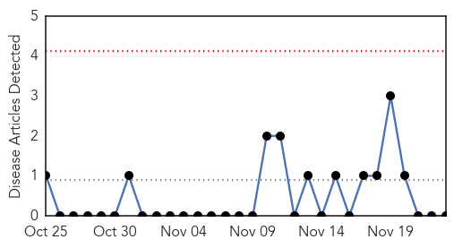
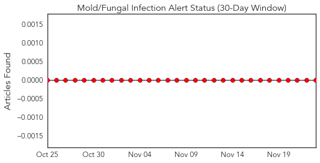
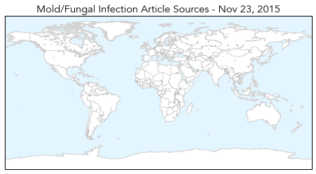
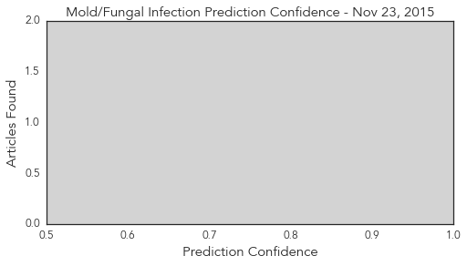

Measles
30-Day Web Trend
0 alerts, 0 warnings

30-Day Twitter Trend
0 alerts, 0 warnings

Article Locations

Article Confidences

Top Articles:
- 0.862
- School tells unvaccinated kids they're not welcome in class for 3 weeks
- 0.658
- Measles Continues To Sicken And Kill Children Around The World : Goats and Soda : NPR
- 0.572
- European health decision-makers meet for high-level discussion on refugee and migrant health
- 0.564
- European health decision-makers meet for high-level discussion on refugee and migrant health - World
- 0.554
- UN seeks common European strategy on health care for refugee and migrant influx
Top Tweets:
-
No tweets found for Nov 23, 2015
Mold/Fungal
30-Day Web Trend
0 alerts, 0 warnings

30-Day Twitter Trend
0 alerts, 0 warnings

Article Locations
Article Confidences
Top Articles:
-
No articles found for Nov 23, 2015
Top Tweets:
-
No tweets found for Nov 23, 2015